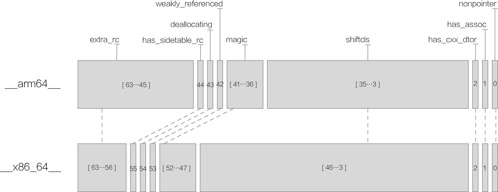
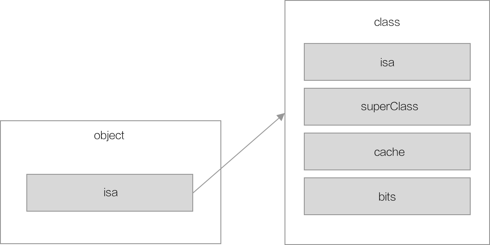
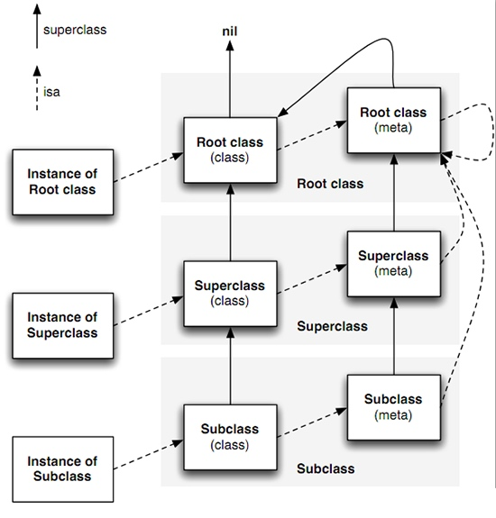

NSObject *obj = [NSObject init];
Objective-C 是 C 的超集，它通过 Runtime 赋予了 C 语言面向对象的能力，但是这是怎么完成的？
从 Objective-C 的角度来讲，一般如果我们要创建一个对象，就需要先拥有一个该对象对应的类。我们用关键字 Class 来表示。C++ 本身的类是用 class 来进行表示，我们可以以这个关键字作为突破口来进行深层次的探究。
打开开源代码工程，command + o 搜索 Class 找到相关定义，我们可以看到如下代码：
typedef struct objc_class *Class;
可以看到 Class 其实是一个 objc_class 类型的结构体指针。继续搜索 objc_class，可以看到：
struct objc_class : objc_object {
// Class ISA;
Class superclass;
cache_t cache; // formerly cache pointer and vtable
class_data_bits_t bits;
/* ... */
}
这里我们先忽略具体实现，最直观的信息就是 objc_class 继承于 objc_object。
继续往底层探索，objc_object 的实现如下：
struct objc_object {
private:
isa_t isa;
public:
/* ... */
}
忽略掉相关的方法，objc_object 的内容主要是一个 isa_t 类型的结构体。下面我们就对 isa_t 进行解析。
isa_t
isa_t 的定义如下：
union isa_t {
isa_t() { }
isa_t(uintptr_t value) : bits(value) { }
Class cls;
uintptr_t bits;
#if defined(ISA_BITFIELD)
struct {
ISA_BITFIELD; // defined in isa.h
};
#endif
};
这里首先要引入两个概念：联合体和位域。
联合体和位域
位域
位域定义与结构定义相仿，其形式为：
struct 位域结构名 {
位域列表
}；
其中位域列表的形式为
类型说明符 位域名: 位域长度(占多少位)
例如
struct {
int a: 4;
int b: 2;
int c: 8;
} data;
说明该结构体中，共占两个字节。其中位域 a 占 4 位，位域 b 占 2 位，位域 c 占 8 位。
这里可能会存在疑问，因为如果严格来算的话，该结构体的实际内容应该为 14 位。之所以占 2 字节是因为位域遵循着一套压缩规则，即：
- 如果相邻位域字段的类型相同，且其位宽之和小于这个类型的sizeof大小，则后面的字段将紧邻前一个字段存储，直到不能容纳为止；
- 如果相邻位域字段的类型相同，但其位宽之和大于类型的sizeof大小，则后面的字段将从新的存储单元开始，其偏移量为其类型大小的整数倍；
- 如果相邻的位域字段的类型不同，则各编译器的具体实现有差异（VC6采取不压缩方式，Dev-C++采取压缩方式）；
- 如果位域字段之间穿插着非位域字段，则不进行压缩；
- 整个结构体的总大小为最宽基本类型成员大小的整数倍。
联合体
联合体(union）与结构体(struct)有一些相似之处。但两者有本质上的不同。
在结构体中,各成员有各自的内存空间, 一个结构变量的总长度是各成员长度之和。
而在联合体中,各成员共享一段内存空间, 一个联合变量的长度等于各成员中最长的长度。
- 联合体是一个结构；
- 它的所有成员相对于基地址的偏移量都为0；
- 此结构空间要大到足够容纳最"宽"的成员；
- 其对齐方式要适合其中所有的成员；
isa_t 的解析
回到上边 isa_t 的代码实现，我们不难发现它其实就是一个 Class 类型与 bits 的联合体。大小应该是 8 字节。那么该结构的位域列表是什么呢？
这里根据 ISA_BITFIELD 的定义，画出了一张比较直观的图：

可以看到，不同的架构体系下位域的表示是不一样的，这里只给出了 __arm64__ 和 __x86_64__ 的架构。
在上图中需要我们着重注意的点就是 shiftcls 这个区域保存的就是 cls 的内容，它指向当前对象的类信息。
而其他的标记代表着当前对象的其他标识信息。综上所述，那么就可以得到下图。

而 class 的 isa 指针将指向自己的元类（meta class），super Class 指针指向自己的父类，如此以来，我们就可以看到那张耳熟能详的关系图：

这也是 Runtime 中意义比较重要的一张图，之后很多的关键点都将围绕它展开。